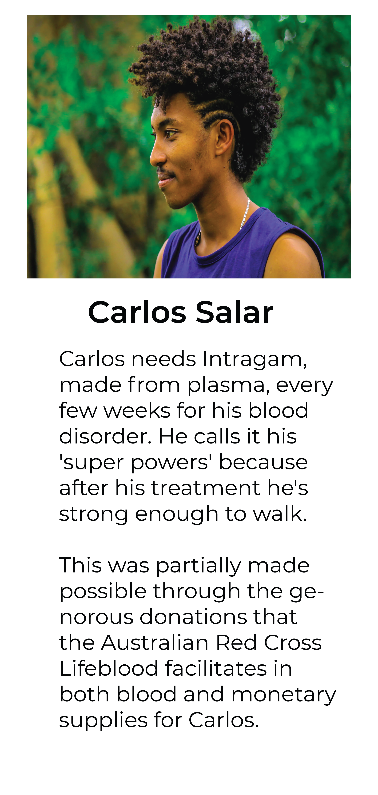
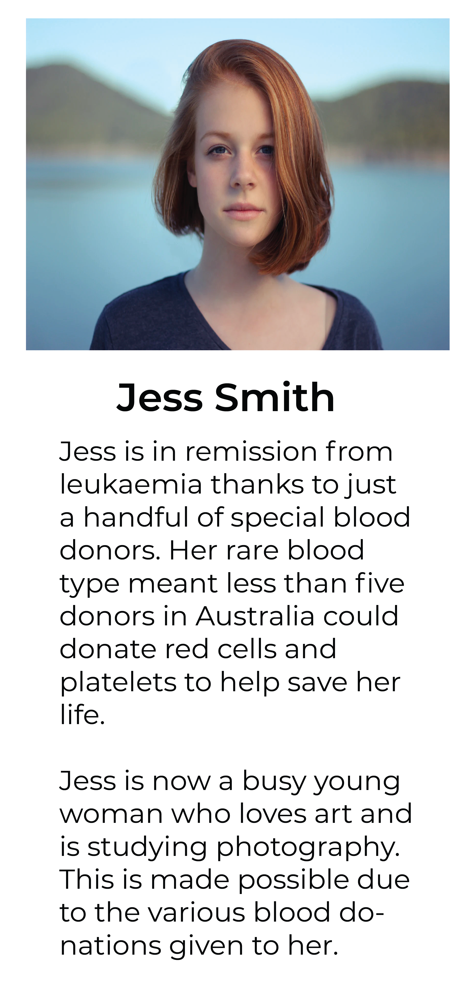
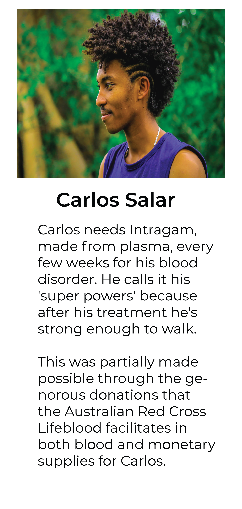
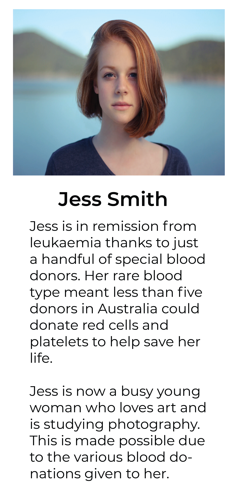

The Australian Red Cross Lifeblood, simply known as Lifeblood, is a branch of the Australian Red Cross responsible for the collection and distribution of blood and related products in Australia. The Australian Red Cross Lifeblood is committed to facilitating the donation of blood for various patients in need across Australia. In fact:
The ARCL plays an important role in the healthcare system by ensuring that patients in Australian hospitals receive life-saving blood products, delivering world-class research and provide expertise in diagnostic, transplantation and other clinical services, so helping reduce suffering. The Australian Red Cross Blood Service collects around 1.3 million blood donations anually of which is used to help people with medical conditions that require blood for suitable treatment. For instance, 34% of donated red blood cells are used to help treat people with cancer and blood diseases such as haemophilia. Correspondingly, medical researchers use donated blood in order to develop and test new treatments for various medical conditions such as blod clots, heart attack, stroke and cancer.
 



There are about five litres of blood in the human body and it's made up of several useful components. You may be able to donate blood, plasma or platelets. Each type of blood donation is used for different medical treatment and your blood type determines the best donation for you to make.
Every day more than 5,000 Australians give blood at a Lifeblood donor centre. It's your chance to relax, be pampered, enjoy a free snack – and feel great knowing that you're saving lives. Here is the four step process of donating blood if you are eligible to donate!
Most donors tell us that giving blood isn't as scary as they thought it would be. Our trained donor centre staff members are there with you through the whole process. They'll explain how everything works and answer your questions.
Honestly, donating blood was a lot easier than I thought! The trained donor centre staff were kind and friendly; making me feel more comfortable to donate blood! Nick Smith, 22
I wanted to make a change and impact in peoples lives, that's why I decided to donate blood. The Australian Red Cross Lifeblood had really helped me bring my mission into effect through their trained and effective staff! Jessica Tran, 54
I wanted a cost effective way to help people, so that's why I chose to donate blood. I thought I would feel sick and ill after the blood donation, but the kind workers at the Australian Red Cross Lifeblood had kept a close eye on me to ensure that would not happen. Thomas Hazleton, 67
While we would love for everyone to donate blood, we have a strict eligibility criteria to ensure that the blood we give to our patients is suitable for them. Click the following button below to be taken to the eligibility criteria page!